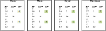
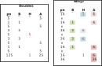
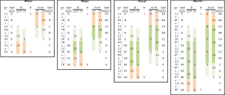

Appendix D. Method Extension Processes
A.
Definitions
A Cycle of Working Bells is a set of bells that successively occupy each other's Places at the Leadheads of a Method's Plain Course.
Further explanation: The Method Christ Church Dublin Differential Doubles has the Leadheads: 31254, 23145, 12354, 31245, 23154 and 12345. It can be seen that bells 1, 2 and 3 occupy each other's Places at the Leadheads, and bells 4 and 5 do the same. This Method therefore has two Cycles of Working Bells -- one with 3 bells and one with 2.
A Method is said to have Plain Bob Leadheads if it can be Rotated (if needed) to start from a Change such that the treble leads at the Leadends and Leadheads, and the Leadends and Leadheads of the Method's Plain Course all occur in a Plain Course of the Method Plain Bob at the same Stage.
Example: The following table shows the Leadends and Leadheads for Norwich Surprise Minor and Plain Bob Minor. It can be seen that the two columns contain the same Rows, albeit in a different order. Norwich Suprise Minor is therefore said to have Plain Bob Leadheads.
| Norwich S Leadends and Leadheads | Plain Bob Leadends and Leadheads |
|---|---|
| 124365 142635 |
132546 135264 |
| 146253 164523 |
153624 156342 |
| 165432 156342 |
165432 164523 |
| 153624 135264 |
146253 142635 |
| 132546 123456 |
124365 123456 |
Two Hunt Bells are said to Course if they follow the same Path, and one Hunt Bell rings in the same Places as the other Hunt Bell at an interval of two Rows apart.
Example: In the Method Grandsire Doubles, the treble and the 2nd Course in the Plain Course (when the initial Row is Rounds). The same is true for Grandsire at all other Stages.
The Mode of an Extension Process specifies which Places remain static, and which Places expand.
Further explanation: Mode m means that all Places up to and including Place m remain static,
and all Places above Place m expand.
E.g. an Extension Process might operate by copying 4 Changes
and inserting them into a Method's sequence of Changes immediately following
these copied 4 Changes.
Assume the 4 Changes to be copied are x12x36.
If the Mode used is 1, the resulting sequence is x12x36x14x58.
I.e. the 1 in 12 remains static, but all Places higher than 1 expand (i.e. increase) by 2 Places
in the inserted section.
If the Mode used is 2, the resulting sequence is x12x36x12x58.
I.e. the 12 remains static, but all Places higher than 2 expand by 2 Places
in the inserted section.
If the Mode used is 3, the resulting sequence is x12x36x12x38.
I.e. the 12 and the 3 in 36 remain static, and all Places higher than 3 expand by 2 Places
in the inserted section.
Note that some Extension Processes operate separately on below-the-treble Places and above-the-treble Places. When Mode is used with above-the-treble Places, it may operate with respect to the highest Place (i.e. the Method's Stage) rather than Place 1. Examples of this are included in Extension Process 3 below.
B.
General
Below are the Extension Processes that are currently recognised by the Central Council for extending Methods to higher Stages.
Only one Extension Process may be used to extend any one Method to a given Stage -- Extension Processes may not be combined.
Further explanation: While Extension Processes may not be combined to extend any one Method to a given Stage, different Extension Processes may be used to extend a single Method to different Stages. E.g. St Simon's Bob Doubles is extended to Triples, Caters, Cinques, etc, using Extension Process 3 below. St Simon's Bob Doubles is also extended to St Simon's Bob Minor using Extension Process 2 below (and St Simon's Bob Major is obtained from St Simon's Bob Triples using Extension Process 2, etc).
1.
Extension Process 1
Process 1 keeps the Length of the Plain Lead constant. The resulting Extension is two Stages higher than the Parent Method.
Prerequisites
The prerequisites for this Extension Process are as follows:
- The Parent Method is a Method with no Hunt Bells, or a Hunter (including a Differential Hunter) with a Hunt Bell that has a Little Path.
- The Parent Method does not use Jump Changes.
Steps
The steps to implement this Extension Process are shown using the following example where Little Bob Minor is the Parent Method:

- Select a Mode m to be used, where m is greater than or equal to 1, and less than the Stage of the Parent Method. In the example above, the selected Mode is 4.
- Divide the place notation (shown in column pn) of the Parent Method into Places Made up to and including the Mode, and Places Made above the Mode. These Places are entered in the columns headed <=m and >m respectively.
- To obtain the first Extension (which is two Stages higher = Major), leave the Places in column <=m unchanged, and increase the Places in column >m by 2. See the box for Major above.
- Then recombine the Places in column <=m and column >m to obtain the place notation for the Extension to Major.
- The above can be repeated to obtain additional Extensions in steps of 2 Stages, as shown above for Royal and Maximus.
Requirements
An Extension produced using Extension Process 1 is only valid if:
- The Extension has the same Symmetry (see Section 4.B) as the Parent Method.
- The Extension has the same number of Hunt Bells as the Parent Method, unless the Parent Method only has Hunt Bells and has no Working Bells, in which case the Extension also only has Hunt Bells.
-
The Extension has the same number of Cycles of Working Bells as the Parent Method.
- If the Parent Method comprises two or more Cycles of Working Bells of equal size, the Extension has this same feature.
-
If the Parent Method has Plain Bob Leadheads, the Extension also has Plain Bob Leadheads.
If the Parent Method does not have Plain Bob Leadheads, the Extension also does not have Plain Bob Leadheads. - The Extension Construction used, when applied to the Parent Method in question, creates an Extension Path containing a minimum of 3 Methods (including the Parent Method) with Stages that are less than or equal to Stage 24.
Extension Construction
- The Extension Construction for referring to this Extension Process is 'EP1-m', where EP1 refers to Extension Process 1, and m is the Mode. So Little Bob Minor is extended using Extension Construction EP1-4.
- When two or more Modes produce the same Extension, the lowest Mode is designated as the Mode used. For example, Extension Constructions EP1-4 and EP1-5 both give the same Extensions for Little Bob Minor. EP1-4 is therefore designated as the Extension Construction used.
2.
Extension Process 2
Extension Process 2 extends a Parent Method that has one Hunt Bell by adding a second Hunt Bell. Both Hunt Bells in the Extension hunt one Place further from the lead than the Hunt Bell does in the Parent Method, and the Hunt Bells Course in the Extension. The resulting Extension is one Stage higher than the Parent Method, and the Length of the Plain Lead is increased by 2 Changes.
Prerequisites
The prerequisites for this Extension Process are as follows:
- The Parent Method is a Hunter with a single Hunt Bell. The Hunt Bell follows a plain hunting Path (i.e. the Path consists of Hunting up to nth's Place, Making nth's, Hunting down to mth's Place, Making mth's). The plain hunting Path may be a Little Path or a non-Little Path.
- No Places are Made above the Hunt Bell Place that transitions the Hunt Bell from Hunting up to Hunting down.
- No places are Made below the Hunt Bell Place that transitions the Hunt Bell from Hunting down to Hunting up.
- The Parent Method does not use Jump Changes.
Steps
The steps to implement this Extension Process are shown using the following example where St Simon's Bob Doubles is the Parent Method:

- Rotate the Parent Method (if necessary) so that the lower Place of the Hunt Bell is the Lead End Change.
- Divide the place notation (shown in column pn) of the Parent Method into Places Made below the Hunt Bell, Places Made by the Hunt Bell, and Places Made above the Hunt Bell. These Places are entered in the columns headed B, H and A respectively.
- Start by copying all the Places Made in the Parent Method (split into columns B, H and A) to the same Changes in the Extension.
- Place Made below the Hunt Bell are left unchanged in the Extension. See the four Places in column B in the example above (highlighted in green).
- Insert a new Change at the start of the Plain Lead and another new Change at the end of the Plain Lead.
- Move the upper Place for the Hunt Bell one Place higher, and also move it one Change earlier in the Plain Lead. So 5 in the Parent Method in column H becomes 6 in the Extension one Change earlier (highlighted in ligher blue).
- Add Places for the additional Hunt Bell two changes after the Places for the original Hunt Bell. See the added 1 and 6 in column H in the example above (highlighted in darker blue), noting that the additional 1 has wrapped around to be the first Change of the Plain Lead.
- Move the Places above the Hunt Bells that are Made before the Hunt Bells reach their higher Places one Place higher, and also move them one Change earlier in the Plain Lead. So 5 and 5 in the Parent Method in column A become 6 and 6 in the Extension one Change earlier (highlighted in lighter pink).
- Move the Places above the Hunt Bells that are Made after the Hunt Bells reach their higher Places one Place higher, and also move them one Change later in the Plain Lead. So 5, 5 and 25 in the Parent Method in column A become 6, 6 and 36 in the Extension one Change later (highlighted in darker pink).
- Then recombine the Places in columns B, H and A to obtain the place notation for the Extension to Minor.
- Rotate the new Method if required to give the desired Extension.
Extension Construction
- The Extension Construction for referring to this Extension Process is 'EP2', where EP2 refers to Extension Process 2. So St Simon's Bob Doubles is extended using Extension Construction EP2. This Extension Process does not use any parameters.
3.
Extension Process 3
Extension Process 3 extends a Parent Method by copying and possibly expanding some of its Changes. This Extension Process is designed to extend Parent Methods that are Hunters with a Hunt Bell that has a non-Little Path. The resulting Extension is an even number of Stages higher than the Parent Method.
Extension Process 3 is undoubtedly complex, requiring many steps to implement. However it is the Extension Process that has been used to name the greatest number of Extensions in the Methods Library, and it gives results that often correspond to how a ringer might expect a Method to extend by visual inspection of the Method's blue line.
Prerequisites
The prerequisites for this Extension Process are as follows:
- The Parent Method is a non-Little Plain or Treble Dodging Method, or a non-Little Alliance Method with a Hunt Bell Path formed from these two. This Extension Process may also be applied to some other forms of Hunter with a Hunt Bell that has a non-Little Path.
- The Parent Method does not use Jump Changes.
Steps
The steps to implement this Extension Process are shown using the following example where Milton Surprise Minor is the Parent Method:

- Rotate the Parent Method (if necessary) so that the bell in 1st's Place at the initial Row (referred to as the treble for the rest of this section) is a Hunt Bell that has a non-Little Path.
-
Group the place notation (shown in column pn) into sections depending on the Place of the treble, as follows:
- A -- treble leading
- B -- treble in 1-2
- C -- treble in 2-3
- D -- treble in 3-4 or lying in Singles
- E -- treble in 4-5 or lying in Minimus
- F -- treble in 5-6 or lying in Doubles
- G -- treble in 6-7 or lying in Minor
- H -- treble in 7-8 or lying in Triples
- I -- treble in 8-9 or lying in Major
- etc.
- Select a Mode m to be used above the treble and below the treble. Mode is greater than or equal to 1, and less than the Stage of the Parent Method. In the example above, Mode 2 has been selected for both above and below the treble. However, the Modes can be different above and below.
- Divide the place notation (shown in column pn) of the Parent Method into Places Made below the treble ('B'), Places Made by the treble ('H' for Hunt Bel), and Places Made above the treble ('A').
- The Places Made above the treble are then inverted -- i.e. they are counted from the back of the Row instead of from the front. For example, 5th's Place in Minor becomes 2nd's Place when counted from the back.
- Then sub-divide the Places above the treble and below the treble into those that are less than or equal to the Mode, and those greater than the Mode. In the example above, since the Mode selected is 2, Places in 1st's or 2nd's are in one sub-division, and the other Places are in the other sub-division.
- The resulting Places are then entered into their respective 5 columns as shown above: B (<=m), B (>m), H, Inv A (>m), and Inv A (<=m), where m is the Mode.
- Select a set of adjacent sections below the treble to copy. There must be an even number of adjacent sections in the set. In the example above, sections D and E have been chosen for copying (shaded in lighter green).
- Determine the step size. The step size is equal to the number of sections in the set selected for copying. In the example above, since two sections have been selected (D and E), the step size is 2. The step size also determines the number of Stages higher the Extension will be. In the example above with a step size of 2, Minor will be extended to Major.
-
The Places in the selected sections are copied and inserted into the sequence immediately following
the selected sections.
For Places that are less than or equal to the Mode, no changes are made to these Places during the copying.
For Places that are greater than the Mode, these are increased by the step size when copied.
In the example above, the inserted sections are shown in darker green. It can be seen that Places 12 remain as 12 in the inserted sections, whereas 3 becomes 5 in the inserted sections. - The inserted sections are given the same lettering as the sections they were copied from, but modified to reflect the increase of the Places. So in the Extension to Major, D and E are copied to new sections that are labelled D2 and E2 respectively, where 2 is the step size.
-
Places in the sections following the sections that have been inserted are also increased by the step size
if they are greater than the Mode m.
In the example above, the sections following the inserted sections are shaded in orange. It can be seen that Places 12 remain 12, whereas 5 becomes 7 in the Extension. - The lettering of the sections following the inserted sections is modified to reflect the increase of the Places. In the example above, F and G in the Parent Method become F2 and G2 in the Extension to Major.
- The process for extending the Places above the treble is the same as below the treble, except that the copying and expanding occurs in the reverse direction (i.e. starting from the half lead and working back towards the start of the lead), and the Mode is counted from the back of the Row instead of from the front. In the example above, sections C and D are selected for copying above the treble. These are inserted earlier in the lead as C2 and D2 respectively. The sections before the inserted sections (A and B) become A2 and B2 respectively in the Extension to Major.
- Increase the upper Place of the treble by the step size and move it to the new Halflead Change. So 6 in Minor becomes 8 in Major in the example above.
- Then reinvert the Places in the two Inv A columns, and recombine the Places in all 5 columns to obtain the place notation for the Extension.
- Rotate the new Method if required to give the desired Extension.
- To obtain further Extensions at higher Stages, each higher by the step size, the sections selected for copying can be inserted repeatedly, increasing the Places that are greater than the Mode by the step size for each insertion. In the example above, Royal is obtained by inserting the D, E sections below the treble twice, once as D2, E2, and again as D4, E4. To obtain Maximus, the C, D sections above the treble have been inserted three times, once as C2, D2, once as C4, D4, and again as C6, D6.
Requirements
An Extension produced using Extension Process 3 is only valid if:
- The Extension has the same Symmetry (see Section 4.B) as the Parent Method.
- The Extension has the same number of Hunt Bells as the Parent Method, unless the Parent Method only has Hunt Bells and has no Working Bells, in which case the Extension also only has Hunt Bells.
-
The Extension has the same number of Cycles of Working Bells as the Parent Method.
- If the Parent Method comprises two or more Cycles of Working Bells of equal size, the Extension has this same feature.
-
If the Parent Method has Plain Bob Leadheads, the Extension also has Plain Bob Leadheads.
If the Parent Method does not have Plain Bob Leadheads, the Extension also does not have Plain Bob Leadheads. - The Extension Construction used, when applied to the Parent Method in question, creates an Extension Path containing a minimum of 3 Methods (including the Parent Method) with Stages that are less than or equal to Stage 24.
Extension Construction
- The Extension Construction for referring to this Extension Process is 'EP3-[Mode above the treble][sections copied above the treble]/[Mode below the treble][sections copied below the treble]'.
- EP3 refers to Extension Process 3. In the example above, the Mode was 2 both above and below the treble. Sections C and D were copied above the treble, and sections D and E were copied below the treble. The Extension Construction used in the example is therefore EP3-2CD/2DE.
Other considerations
- The example above uses a set of two adjacent sections to be copied and inserted, giving an Extension that is two Stages higher. Larger sets of sections can be copied and inserted, provided the number of sections is even. For example, sections D, E, F and G could be selected for copying and inserting. Since four sections are involved, the step size is 4, and so the first Extension would be four Stages higher than the Parent Method. D4, E4, F4 and G4 sections would be inserted in the first Extension. In the next Extension (which would be eight Stages higher than the Parent Method), D8, E8, F8 and G8 sections would also be inserted, and so on. Superlative Surprise Major is an example of a Method that extends in steps of 4 Stages. The Extension Construction for Superlative's Extension Process is EP3-3ABCD/3FGHI.
- Different size sets of sections may be copied and inserted above and below the treble. For example, sections D, E, F and G could be selected below the treble, and sections A and B could be selected above the treble. In order to extend the Length of the Plain Lead by the same number of Changes above and below the treble, the sections above the treble would need to be copied and inserted twice for every one time the sections below the treble are copied and inserted. The resulting Extension in this example is four Stages higher than the Parent Method. So D4, E4, F4 and G4 sections would be inserted below the treble in the first Extension, and A4, B4, A2 and B2 sections would be inserted above the treble in the first Extension. For example, there is an Extension Process for Cambridge Surprise Major that uses steps of 2 above the treble and steps of 4 below the treble. The Extension Construction for this Extension Process is EP3-1AB/4CDEF.
- When the same results are obtained by copying different sections, designate the sections closest to the start of the lead as the ones that were copied. This ensures that whatever Stage Method is taken as the Parent Method in a set of Methods that are on the same Extension Path, the same Extension Construction will result. E.g. in the Milton Surprise Minor example above, it can be seen that if sections A and B were copied above the treble instead of sections C and D (while keeping the Mode as 2) the same results would be obtained. Therefore the Extension Construction for Milton Surprise Minor above should be described as EP3-2AB/2DE, rather than EP3-2CD/2DE. (The CD sections above the treble were used in the example above to show what happens to the AB sections above the treble in the Extension.)
- When two or more different Modes give the same results, designate the Mode used as the lowest one.
- Finally, the example and descriptions above assume the Parent Method has Palindomic Symmetry about the Leadend Change and the Halflead Change. For non-Palindromic Methods, Extension Process 3 may be applied separately in both halves of the Plain Lead, subject to the following:
- If the Places Made below the treble are Palindromic, or the Places Made above the treble are Palindromic, then an Extension Construction is selected that retains that symmetry in the Extension.
- If the Places Made above the treble in the first half of the Plain Lead have Rotational Symmetry with the Places Made below the treble in the second half of the Plain Lead, or the Places Made below the treble in the first half of the Plain Lead have Rotational Symmetry with the Places Made above the treble in the second half of the Plain Lead, then an Extension Construction is selected that retains that symmetry in the Extension.
-
An example of an Extension Construction for a non-Palindromic Method is EP3-1AB/2DE/3JK/2OP.
The four copied sections are respectively:
- Above the treble before the Halflead Change;
- Below the treble before the Halflead Change;
- Below the treble after the Halflead Change; and
- Above the treble after the Halflead Change.